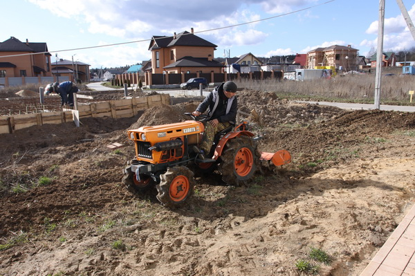

Профессиональная расчистка, вспашка земли и выравнивание участка
Мы готовы взять на себя самые трудоемкие задачи на даче, парке или сельхоз поле:
- расчистка участка;
- вывоз мусора;
- вспашку земли;
- выравнивание участка;
- ликвидацию вредителей, кротовых и змеиных нор;
- выборку корневищ;
- комплексную подготовку почвы под засев сельскохозяйственных культур или газона, ландшафтных или строительных работ;
- строительство дома;
- строительство дома;
- дренаж участка;
- в зимний период уборку снега, льда и кровли;
По вашему требованию мы превратим непроходимый бурелом в идеальный газон всего за несколько дней работы!
Мы работаем по всему Центральному региону. Для консультации и расчета стоимости вашего заказа звоните по номеру 89077077799
Вспашка мотоблоком или трактором?

Профессиональный подход к обработке земли начинается с применения специализированной техники.
Если речь идет о целине, то вспашка земли должна начинаться с прохода трактора. Для небольших участков мы используем признанный во всем мире японский мини-трактор Kubota (Кубота), оборудованный 150-килограммовой фрезой с возможностью переключения оси вращения и частотой до 1000 оборотов в минуту. Для сельскохозяйственных полей в нашем парке представлен универсально-пропашной трактор МТЗ с различными навесными плугами производительностью 30 Га в день.
Вспашка мотоблоком в условиях необработанной земли требует нескольких подходов, причем, даже это не гарантирует необходимой для посадки глубины в 22-25 см. Однако, тяжелый мотоблок эффективен для выравнивания участка после прохода трактора , формирования гряд, каналов и ежегодной обработки почвы. Для этих задач мы используем мотокультиваторы и мотоблоки известных японских марок с частотой вращения до 100 оборотов в минуту.
Мы не используем легкие мотокультиваторы, которые так часто покупают владельцы садовых участков. Они подходят только для хорошо распаханной мелкофракционной почвы. На целине такая техника будет прыгать как мяч, не углубляясь в землю. Зато легкий мотоблок хорошо подойдет для ухода за участком после профессиональной комплексной вспашки под газон или огород.
Вспашка под газон или огород – в чем разница?
При обработке земли мы учитываем ее дальнейшее использование.
Так, для подготовки к посадке агрокультур после прохода трактора мы рыхлим почву бороной или культиватором (в зависимости от площади земельного участка) в 2-5 проходов, измельчаем земельную фракцию и уничтожаем корни сорняков, формируем гряды и водоотводные каналы.
А для обустройства газона и ландшафтных работ требуется еще более тщательный подход. Мы перерабатываем землю в «пух» с помощью четырехкратного или семикратного прохода активной почвофрезы на нашем мини-тракторе. Затем выравниваем участок вручную и утрамбовываем при помощи катка. Для активного использования газона после посева делаем утрамбовку земли специальной виброплитой. Такая вспашка под газон позволяет сразу же перейти к обустройству рулонного или посевного газона.
Мы не используем легкие мотокультиваторы, которые так часто покупают владельцы садовых участков. Они подходят только для хорошо распаханной мелкофракционной почвы. На целине такая техника будет прыгать как мяч, не углубляясь в землю. Зато легкий мотоблок хорошо подойдет для ухода за участком после профессиональной комплексной вспашки под газон или огород.
Заказать пропашку земли минитрактором
Заказать покос трав на сено
Покос высокой травы
Заказать Выравнивание участка фрезой
Заказать Выравнивание участка фрезой
Заказать Выравнивание участка фрезой
Районы куда мы можем приехать:
Академическое(Ленина, 4), Бескудниковское, Войковское, Донское, Капотня, Алексеевское(Маяковского,24), Бирюлёво, Измайлово, Замоскворечье, Коптево, Арбат, Богородское, Гагаринское, Дегунино, Котловка, Аэропорт, Братеево, Головинское, Зюзино, Крылатское, Бабушкинское, Бутырское, Гольяново, Зябликово, Крюково, Басманное, Вешняки, Даниловское, Ивановское, Кунцево, Беговое, Внуково, Дмитровское, Измайлово, Левобережное, Лефортово, Матушкино, Нагорное, Перово, Лианозово, Метрогородок, Некрасовка, Печатники, Ломоносовское, Мещанское, Нижегородское, Пресненское, Лосиноостровское, Митино, Новогиреево, Раменки, Люблино, Можайское, Новокосино, Ростокино, Марфино, Молжаниновское, Обручевское, Рязанское, Марьина Роща, Москворечье-Сабурово, Останкинское, Савёлки, Марьино, Нагатино-Садовники, Отрадное, Савёловское.